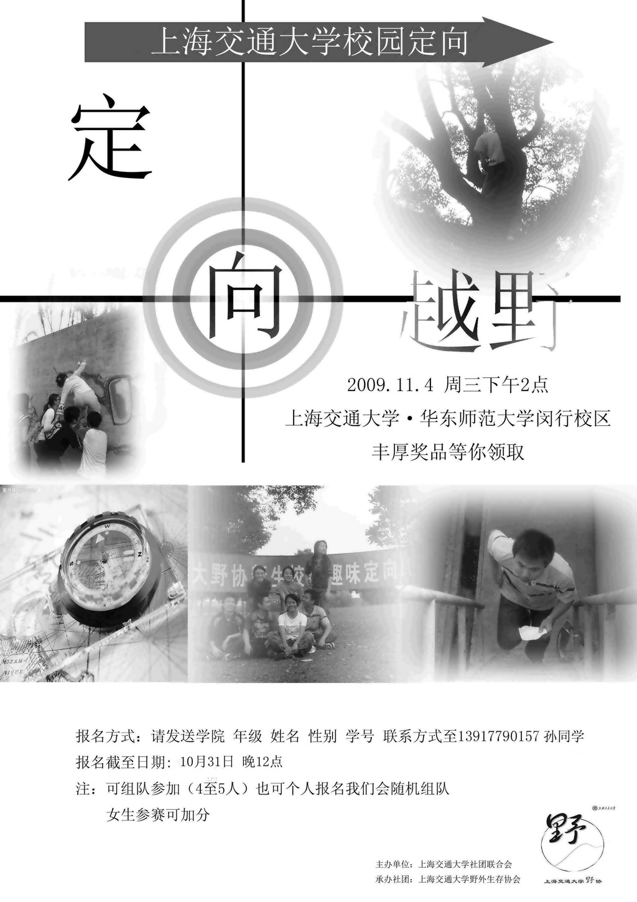
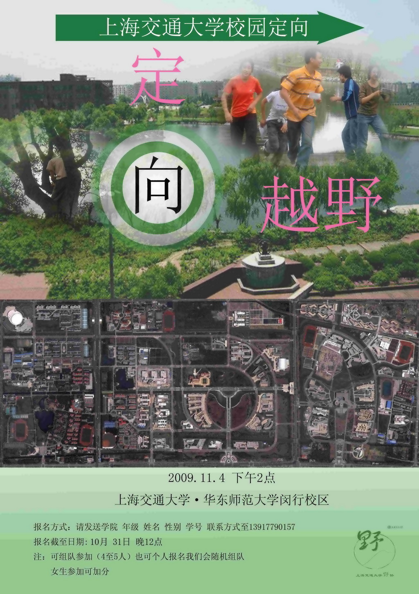

发信人: OutdoorAssoc (交大野协官方ID), 信区: outdoor
标 题: 交大野协2009校园定向！
发信站: 饮水思源 (2009年10月29日01:11:42 星期四)
 screen.width - 200){this.width = screen.width - 200}">
 screen.width - 200){this.width = screen.width - 200}">
让大家等待已久的校园定向终于出炉了！
现在面向同学们火热报名中！
野协邀你参加尝试全程自行车的校园定向！
将校园定向办在两个校区，跨度交大和华师大两所学校的校园！
还在等什么？赶快来报名！
本次活动费用由协会全部承担，不需报名费
开始时间为下周三（11月4日）下午2点。
报名时间是从现在起直至本周六（10月31日）晚12点。
报名方式：现在直接回本贴报名 或者 发短信至13917790157
注意我们的报名形式： 可个人报名也可集体报名。若个人报名，请注明自己的学院、姓名
、性别、学号和联系方式，回帖或直接发信息即可，组队会由野协来完成；若集体报名，
请以4到5个人为单位组队，其中一人为队长，由队长统一将组员的信息（如上）发给我们
。
这次定向特别联合华师大主办，精彩无限。
行程将覆盖交大闵行校园及华师大两所学校的校区。
全程将用自行车，让你体验风的快感！
有很多挑战等你来攻破，有很多游戏等你来玩得痛快！
更有精美礼品等着你哦！
这一切 尽在2009年野协隆重推出的 上海交通大学校园定向 ！
赶快报名吧！先报者优先！
------------------------------------------------------------------------------
A 还不清楚什么是校园定向？
定向运动，即Orienteering，起源于瑞典，是一项挑战智力和体能的体育项目和娱乐活动
。
在本次定向中：
在起点，你所有的工具就是一张标识好目标点的地图+一辆自行车。
你要通过地图来找到所标的地点，到了地点后，需要你去找到证明你来过此点的打点器，
在打卡器上打上标志或者有精彩的游戏和挑战等待你去完成。规定时间内谁完成的点数越
多，谁就是获胜方；若所有点都完成，则谁回到起点越快，谁就是胜者！这不但是一场和
其他团队的较量，更是与时间的较量。你能赢得挑战并证明自己吗？
不能光说哦，要你来一比高下！
B 已经做过定向运动了？
你是否已经跟其他社团或组织参加过定向运动了？是否还在犹豫要不要第二次，或者第n次
投入到定向运定中？ 为什么犹豫呢？ 野协的定向有充分的理由要你相信，这次的定向绝
对是与众不同的！ 交大唯一每年例行举办校园定向的专业社团——野外生存协会本次校园
定向的隆重推出绝对让你惊喜多多。每年都有新鲜的东西，每年都有强大的阵容！
你是否会卷睡袋？知道山上什么地方适合扎帐篷吗？是否熟悉野外生存的各种装备？你是
否想亲身体验户外装备的快速学习？...本次定向，定让你收获不菲。
不要犹豫了，赶快拿起你的手机报名，或者直接回复本贴。09年校园定向，期待你的加入!
------------------------------------------------------------------------------
-
我们在新生的宿舍楼下已经张贴了本次活动的海报。更多详情咨询可以回本贴。我们会在
第一时间回复！
2009/10/29
野协定向准备组 致
--
以热爱户外为荣 以远离自然为耻 以团队合作为荣 以个人主义为耻
以关心妹妹为荣 以目的不纯为耻 以互相帮助为荣 以自私自利为耻
以保护环境为荣 以破坏自然为耻 以朴实户外为荣 以攀比装备为耻
以积极探索为荣 以盲目冒险为耻 以四海一家为荣 以狭隘户外为耻
※ 修改内容:·OutdoorAssoc 于 10月29日02:00:01 修改本文·[FROM: 211.80.60.158]
※ 修改内容:·OutdoorAssoc 于 10月29日02:06:08 修改本文·[FROM: 59.78.43.210]
※ 修改内容:·OutdoorAssoc 于 10月29日02:34:44 修改本文·[FROM: 59.78.43.210]
※ 修改内容:·OutdoorAssoc 于 10月29日02:40:42 修改本文·[FROM: 59.78.43.210]
※ 修改内容:·OutdoorAssoc 于 10月29日02:42:28 修改本文·[FROM: 59.78.43.210]
※ 修改内容:·emzhang 于 10月29日06:13:33 修改本文·[FROM: 59.78.51.38]
|